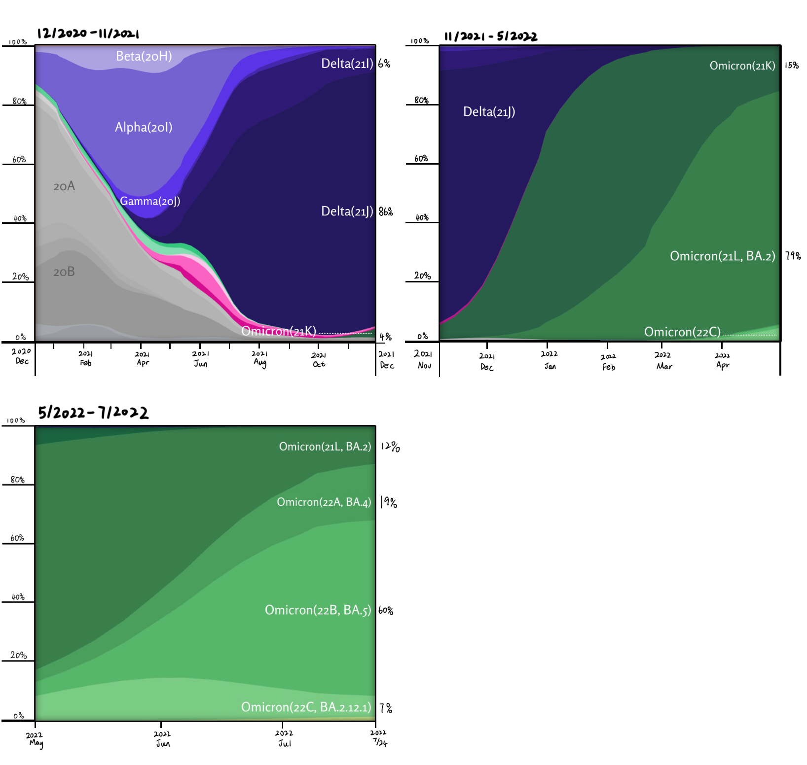

The full transformation of the COVID-19 virus
The coronavirus is mutating every second, making it possible for people who get vaccinated to catch the virus. Even infected patients have a chance of reinfection with other mutant strains. After Alpha emerged in the second half of 2020, it gradually became the global mainstream, accounting for 45% in March and April 2021. In June, Delta's share rose rapidly, reaching around 27% on June 21. Last November, Omicron emerged, and on December 27, it surpassed 50 percent of the world's viral strains. It was dominated by the Omicron subtype BA.2 until June 2022. Due to competition among Omicron substrains, BA.2 has been replaced by BA.5 as of September, accounting for nearly 90% of the global dominant strain.
